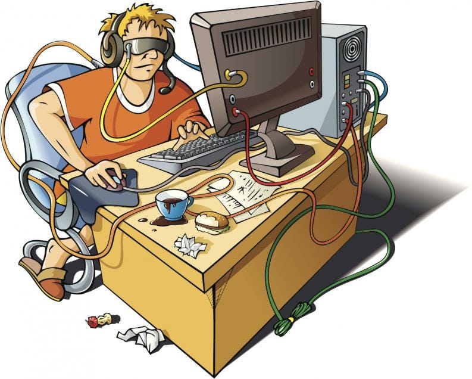
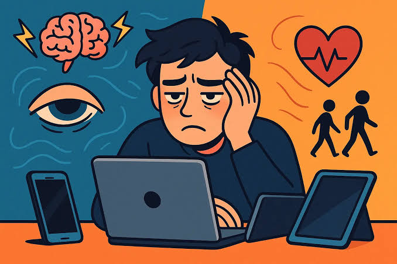
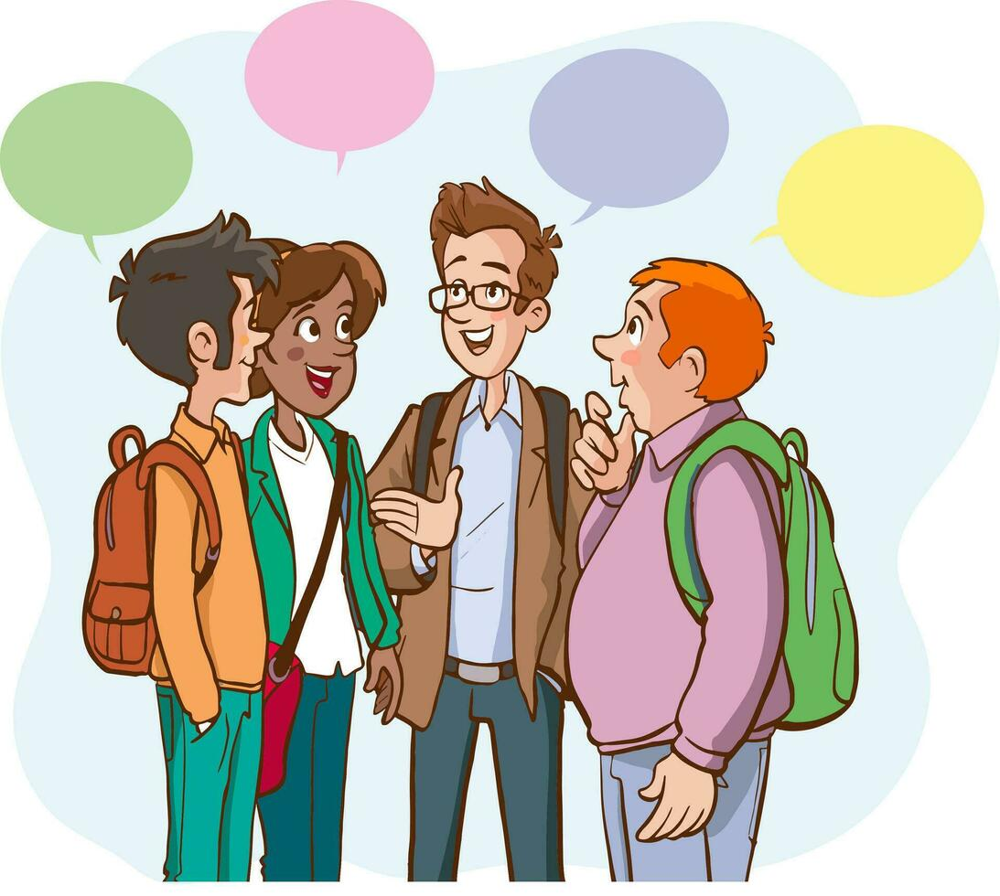

¿Qué es la Tecnodependencia?
La tecnodependencia (también llamada tecnoadicción o adicción a la tecnología) es la dependencia excesiva o compulsiva hacia dispositivos tecnológicos como el celular, las redes sociales, internet, videojuegos, computadoras o tablets.
No se trata solo de usar mucho la tecnología, sino de que esta se convierte en el centro de la vida de la persona. Una persona tecnodependiente tiene síntomas como:
- Ansiedad, irritabilidad o vacío cuando no puede usar el celular.
- Necesita cada vez más tiempo conectado (tolerancia).
- Descuida otras actividades importantes (estudio, familia, deporte, sueño).
- Usa la tecnología como forma de escapar de problemas o emociones negativas.

¿Qué ocasiona la Tecnodependencia?
Las causas suelen ser una combinación de varios factores:
Factores psicológicos
- Ansiedad, estrés, depresión o soledad.
- Baja autoestima.
- Necesidad de escapar de problemas reales.
- Búsqueda de recompensas inmediatas (likes, notificaciones, mensajes).
Factores sociales y culturales
- La hiperconectividad de la sociedad actual (todo se hace por celular).
- Presión social por estar siempre disponible y “al día”.
- Influencia de amigos y redes sociales.
- El diseño de las aplicaciones, que está pensado para enganchar (notificaciones, algoritmos, recompensas variables).

¿Por qué está mal darle teléfonos a niños tan pequeños?
El uso de dispositivos tecnológicos por tiempo prolongado, sobre todo en videos o contenidos de TikTok que son muy cortos, a veces genera estragos en la posibilidad de mantener la atención en una tarea o en un estímulo, e incluso limita la creatividad. Dejar un celular a un niño o niña sin supervisión es como dejarlo solo en el mundo real, es decir, equivale exactamente a los mismos peligros, dijo en entrevista para UNAM Global Karla Alejandra Cervantes Basán, profesora de la Facultad de Psicología de la UNAM.
Especialistas de la UNAM y estudios recientes coinciden en que el exceso de pantallas en la primera infancia también puede retrasar el lenguaje, afectar el desarrollo motor y reducir la interacción social. Los contenidos de ritmo muy rápido acostumbran al cerebro a estímulos inmediatos, lo que dificulta concentrarse en actividades más largas. Cuando no hay supervisión adulta, se pierde además la retroalimentación verbal y emocional necesaria para un buen desarrollo.
Principales repercusiones:
- Menor capacidad de atención y concentración
- Retrasos en el lenguaje
- Limitación de la creatividad y del juego libre
- Menor actividad física y desarrollo motor
- Riesgos de seguridad y exposición a contenidos inadecuados
- Problemas de sueño y fatiga visual
Qué hacer en los momentos en que no tienes celular
Cuando no tienes el celular (o decides dejarlo a un lado), es una buena oportunidad para recuperar actividades que fortalecen la mente, el cuerpo y las relaciones. Aquí tienes varias opciones prácticas:
Actividades físicas y al aire libre
- Salir a caminar o correr.
- Hacer ejercicio, yoga o estiramientos en casa.
- Andar en bicicleta.
- Observar la naturaleza o simplemente sentarte al aire libre.
Actividades mentales y creativas
- Leer un libro físico.
- Escribir (diario, cartas, cuentos).
- Dibujar, pintar o hacer manualidades.
- Armar un rompecabezas o jugar juegos de mesa.
- Cocinar o hornear algo nuevo.
- Practicar un instrumento musical.
Ejemplo 1 – Actividad física
Caminar 20-30 minutos al aire libre
Sal de casa y camina por tu barrio o un parque, sin auriculares ni celular. Observa el entorno y camina a tu ritmo.
Para qué nos sirve:
- Reduce el estrés.
- Libera endorfinas.
- Despeja la mente.
Ejemplo 2 – Actividad social
Conversar cara a cara con alguien
Siéntate con un familiar o amigo y hablen sin tener el celular a la vista. Escúchense de verdad y compartan cómo les fue el día.
Para qué nos sirve:
- Fortalece las relaciones reales.
- Reduce la sensación de soledad.
